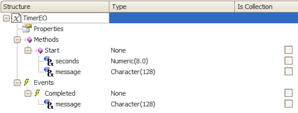
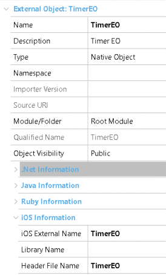
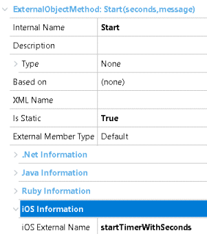

IntroductionThis guide explains how to create an External Object that can be called from offline and online code and can trigger a GeneXus Event. Getting startedIf you haven't already done so, please read this document first, explaining the basics on how to create an external object for iOS. You must provide the user-event-callable implementation allong with the offline implementation, so start there first. Then check how to create an extension library as this sample uses it. ExampleYou will implement a timer in Swift, that is, an external object with a method that receives a number of seconds, a message, and calls a GeneXus event when the time has elapsed, passing the message to the event. We need:
External Object definitionThis is the external object definition:  Make sure you mark the Start method and the Completed event as "static". OfflineBefore starting with the implementation, you need to provide some information in the EO definition.  And the Start method:  ImplementationNow that everything is in place, you can provide the actual implementation. First of all, create the TimerEO class as follows: TimerEO.swift
import Foundation
import GXStandardClasses
class TimerEO: GXExternalObjectBase {
private static let gxServerSideEvent = "Completed"
private var message: String = ""
init(message: String) {
self.message = message
super.init()
}
static func startTimerWithSeconds( _ seconds: Int, _ message: String) {
TimerEO(message: message).startTimer(seconds: seconds)
}
func startTimer(seconds: Int) {
gx_dispatch_sync_on_main_queue({() -> Void in
Timer.scheduledTimer(timeInterval: TimeInterval(seconds), target: self, selector: #selector(self.timerDidFinish), userInfo: nil, repeats: false)
})
}
open override var externalObjectName: String {
return "TimerEO"
}
// MARK - GeneXus event
@objc func timerDidFinish(timer: Timer) {
self.dispatchExteralObjectEvent(TimerEO.gxServerSideEvent, withParameters: [self.message])
}
}
A few things to note:
You are done, when using the Start method from the TimerEO from an offline application, the generated code will directly call the static function startTimerWithSeconds. Online sectionBy "online", we mean an external object that can be called from a user event, whether the object that calls it is online or offline. As described in External Object for iOS Devices, you need to provide a "mapper" class (TimerEOLibrary.swift) and the implementation for the handler (TimerEOActionHandler.swift). ImplementationHere's the code: TimerEOLibrary.swift
import GXCoreBL
@objc(TimerEOLibrary)
public class TimerEOLibrary: NSObject, GXExtensionLibraryProtocol {
public func initializeExtensionLibrary(withContext context: GXExtensionLibraryContext) {
GXActionExternalObjectHandler.register(TimerEOActionHandler.self, forExternalObjectName:TimerEOActionHandler.classIdentifier)
}
}
TimerEOActionHandler.swift
import Foundation
import GXCoreBL
@objc(TimerEOActionHandler)
public class TimerEOActionHandler: GXActionExternalObjectHandler {
public static let classIdentifier = "TimerEO"
override public class func handleActionExecutionUsingMethodHandlerSelectorNamePrefix() -> Bool {
return true
}
// MARK - External object methods
@objc public func gxActionExObjMethodHandler_Start() {
let (secs, msg) = self.readParameters()
if (secs == nil) {
let error = NSError.wrongNumberOfParametersDeveloperError(forMethod: self.actionExObjDesc.actionExternalObjectMethod)
self.onFinishedExecutingWithError(error)
return
}
self.handleStartTimerAction(seconds: secs!, message: msg!)
self.onFinishedExecutingWithSuccess()
}
//MARK: - Private
private func readParameters() -> (Int?, String?) {
guard let actionParameterArray = self.actionExObjDesc.actionParametersDescriptor??.actionParametersDescriptors,
actionParameterArray.count == 2 else {
return (nil, nil)
}
let seconds = self.readStringParameter(actionParameterArray[0], from: self.contextEntityData())
let msg = self.readStringParameter(actionParameterArray[1], from: self.contextEntityData())
return (GXUtilities.integerNumber(fromValue: seconds) as? Int, GXUtilities.nonEmptyString(from: msg))
}
private func handleStartTimerAction(seconds: Int, message: String) {
// Start the timer and trigger the user event
TimerEO.startTimerWithSeconds(seconds, message)
self.onFinishedExecutingWithSuccess()
}
}
The online code uses the gxActionExObjMethodHandler_Start function; gets the parameters and then calls the handleStartTimerAction function which uses the TimerEO implementation already discussed. GeneXus test objectsTo test the implementation, we created the following objects: MainTimer (Dashboard)PropertiesMain program: True Connectivity Support: Offline Events
Event TimerEO.Completed(&message)
msg(&message)
EndEvent
Event 'StartTimer'
TimerEO.Start(5, "TimerEO from user code")
Endevent
Event 'StartTimerProc'
StartTimerProc()
EndEvent
StartTimerProc (Procedure)SourceTimerEO.Start(5, "TimerEO from offline code") Source CodeYou can download the source code from this sample here. Note: you'll need a SVN client to donwload the source code, or you can browse it online in the link above. InstallationYou need GeneXus 15 Upgrade 9 or higher and copy the TimerEO folder to "GeneXusInstallDir\Libraries\". |
| Backlinks | |
| External Object for iOS Devices | Global Events |